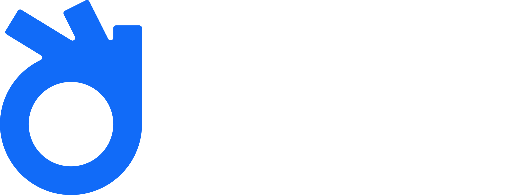

Pós-Graduação
em Fisioterapia em Reabilitação Cardiorrespiratória Domiciliar
Uma das áreas que mais crescem no atendimento domiciliar. Aqui você domina protocolos atualizados, técnicas práticas e estratégias seguras para reabilitar pacientes cardíacos e respiratórios no ambiente domiciliar.
Carga horária
360 horas
Formato
100% online
Avaliação
Sem TCC
Diploma
MEC · Focus
Coordenação
Dra. Ana Paula Breda · Prof.ª Juliana Moura · Prof.ª Cristiane Paião · Prof. Marcelo Colucci
A demanda urgente
O envelhecimento da população, o avanço das doenças cardiovasculares e respiratórias e a expansão dos serviços de atendimento domiciliar criaram uma demanda urgente por fisioterapeutas preparados — com método, segurança e respaldo científico.
Se você se identifica
Sair da rotina tradicional e oferecer atendimento de qualidade diretamente no ambiente do paciente, com segurança técnica.
Programas adaptados que geram resultado mesmo fora da clínica ou do hospital — com base em evidências.
Recursos para otimizar a ventilação, reduzir sintomas e prevenir complicações em pacientes complexos.
Atenção domiciliar, telerreabilitação e atendimento autônomo: setores em plena expansão para quem chega especializado.
A escolha que define a carreira
O profissional que sobe
O profissional que estagna
Pronto para se posicionar onde o mercado cresce?
Quero garantir minha vaga arrow_forwardA entrega da pós
Atendimento de qualidade diretamente no ambiente do paciente, com segurança e respaldo científico.
Programas individualizados que geram resultados mesmo fora da clínica ou do hospital.
Recursos fundamentais para otimizar a ventilação, reduzir sintomas e prevenir complicações.
Prepare-se para o futuro da fisioterapia, unindo inovação e atendimento humanizado.
360h
Carga horária total
9
Módulos estruturados
100%
Online · sem TCC
12
Meses de acesso
Reconhecida (Focus)
Grade curricular
Cada módulo entrega evidência, instrumentos validados e ferramentas aplicáveis na consulta domiciliar — não conteúdo solto.
Módulo 1 · 40h
Conceitos básicos da RCP e como adaptar o atendimento ao domicílio, com foco em segurança, prevenção de quedas e estratégias de comunicação com famílias.
Módulo 2 · 20h
Impacto do envelhecimento nas funções cardiorrespiratórias, riscos de quedas, polifarmácia e adaptação de programas de reabilitação para idosos.
Módulo 3 · 60h
Fisiopatologia das doenças pulmonares crônicas, avaliação funcional e prescrição de exercícios em domicílio para casos como DPOC, asma e COVID longa.
Módulo 4 · 60h
Avaliação clínica e prescrição de exercícios aeróbicos, de força e equilíbrio para pacientes cardíacos em ambiente domiciliar, com foco em qualidade de vida.
Módulo 5 · 30h
Integra fisioterapeutas, nutricionistas, psicólogos e outros profissionais, trazendo práticas de cuidado integral, cuidados paliativos e estratégias de adesão ao tratamento.
Módulo 6 · 60h
Avaliação e aplicação de técnicas respiratórias, oxigenoterapia, ventilação não invasiva e condutas em situações emergenciais no domicílio.
Módulo 7 · 20h
Inovações em telerreabilitação, inteligência artificial e gestão de programas domiciliares, além de marketing e empreendedorismo em saúde.
Módulo 8 · 10h
Consolidação dos conhecimentos com exercícios práticos adaptados a diferentes cenários, promovendo segurança, mobilidade e autonomia funcional.
Capacita o aluno para produzir e publicar pesquisas científicas, unindo teoria e prática em fisioterapia baseada em evidências.
Pronto para aprofundar de verdade?
Sim, quero essa formação arrow_forwardCorpo docente
Profissionais altamente qualificados e atuantes em fisioterapia cardiorrespiratória domiciliar e reabilitação cardiorrespiratória.
Atuante na reabilitação cardiorrespiratória com base na prática clínica e na pesquisa científica.
Docente
Especialista em fisioterapia cardiorrespiratória domiciliar com experiência consolidada no atendimento domiciliar.
Docente
Reabilitação cardiorrespiratória com olhar prático para protocolos individualizados no domicílio.
Certificação
Diploma reconhecido
Certificação reconhecida pelo MEC, emitida via Faculdade Focus em parceria com o Instituto Adapta. A Escola Adapta possui Acordo de Cooperação Técnica e Científica com a Faculdade Focus, responsável pelo Projeto Pedagógico e pelas ações acadêmicas com os alunos.
Aplicação imediata
Grande parte das estratégias e técnicas das aulas foram pensadas para que o aluno possa aplicar já no dia seguinte — mesmo que ainda esteja no início do aprendizado.
12 meses
de acesso
Sem TCC
conclusão simplificada
Replay ilimitado
no seu ritmo
100% online
qualquer dispositivo
Investimento
Pós-graduação completa
De R$ 9.997
12× R$ 797
ou R$ 7.997 à vista (20% de desconto)
Pagamento parcelado em até 12× no cartão · sem taxa de matrícula
Quero matricular agora arrow_forwardverified_user Garantia incondicional de 7 dias · Acesso imediato
O que está incluso
Garantia incondicional
Você não corre nenhum risco ao se matricular. Tem 7 dias para acessar a plataforma, navegar pelas aulas e avaliar com calma. Sem riscos. Sem letra miúda. Sem dor de cabeça. Mudou de ideia por qualquer motivo? Devolvemos 100% do valor pago.

Sobre o Instituto Adapta
O Instituto Adapta transforma a carreira de profissionais da saúde e da educação física, preenchendo a lacuna entre teoria acadêmica e exigências do mercado.
Por meio de especializações e MBAs com corpo docente formado por gestores e especialistas atuantes, capacitamos você com as ferramentas e a segurança necessárias para se destacar. Escolher o Adapta é decidir aprender com quem é referência, para se tornar uma.
Perguntas frequentes
Você pode assistir às aulas quantas vezes quiser para revisar o conteúdo enquanto o seu acesso estiver ativo.
A partir da data da matrícula você terá 12 meses de acesso.
Sim, em até 12x no cartão. Não há taxa de matrícula — apenas as mensalidades.
Sim, você receberá por e-mail.
Sim. Você pode assistir de qualquer dispositivo com internet e também fazer o download das aulas via app da Hotmart para assistir offline.
Temos garantia incondicional de 7 dias. Basta enviar um e-mail para contato@escolaadapta.com que devolvemos todo o valor, sem justificativas nem burocracias.
Não, você pode começar a pós durante a graduação. Para receber o certificado, é necessário enviar o certificado de conclusão da graduação até o final do curso.
Não. Por legislação do MEC, o TCC não é mais obrigatório.
No site e-MEC. A Escola Adapta possui Acordo de Cooperação Técnica e Científica com a Faculdade Focus, responsável pelo Projeto Pedagógico e pelas ações acadêmicas com os alunos — sendo responsável pedagogicamente e pelas emissões dos documentos pertinentes.
Sua próxima especialização começa agora
Atenção domiciliar, telerreabilitação e atendimento autônomo: setores em plena expansão para quem chega com método, segurança e respaldo científico.
Matricule-se agora arrow_forwardverified_user Garantia 7 dias · Acesso imediato · 12× R$ 797 · Diploma MEC